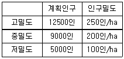
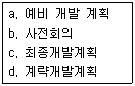
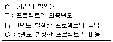
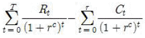
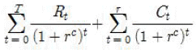
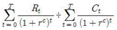
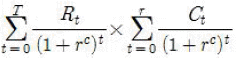
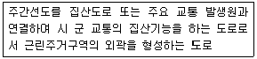

도시계획기사 (2017-03-05 기출문제)
1과목: 도시계획론
1. 자본주의 사회의 도시계획에 대한 비판적 분석을 통해 형성되었으며 도시에서 일어나는 끊임없는 계층 간의 갈등에 대해 정부가 간섭하는 과정을 통해 현대의 도시계획을 분석하고 설명한 계획이론 모형은?
- 협력적 계획 모형
- 유기적 계획 모형
- 합리적 계획 모형
- 정치경제 계획 모형
(정답률: 83%)

2. 풍수해, 산사태, 지반의 붕괴, 그 밖의 재해를 예방하기 위하여 법률로 지정한 지구는?
- 방화지구
- 방재지구
- 경관지구
- 고도지구
(정답률: 93%)
3. 광장의 종류와 설치목적이 옳지 않은 것은?
- 중심대광장 : 다수인의 집회, 행사, 사교등을 위하여 필요한 경우에 설치할 것
- 교차점광장 : 혼잡한 주요도로의 교차지점에서 각종 차량을 원활히 소통시키기 위하여 필요한 곳에 설치 할 것
- 건축물부설광장 : 건축물의 이용효과를 높이기 위하여 건축물 내부 또는 그 주위에 설치할 것
- 지하광장 : 교통처리를 원활히하고 이용자에게 휴식을 제공하기 위하여 필요한 곳에 설치할 것
(정답률: 55%)
4. 중세 유럽의 도시의 특성에 대한 설명으로 옳지 않은 것은?
- 성벽과 대규모 사원이 도시 공간의 주된 구성요소이다.
- 방어를 위해 사용된 해자, 운하, 강이 개별도시를 고립시켰다.
- 도심을 강조하기 위해 직선을 중심으로 계획하고 엄격한 용도규제를 통하여 도시내부 기능을 분리하였다.
- 필요한 기회가 주어질 때 마다 이를 활용하는 유기적 계획(organic planning)의 형태로 진행되었다.
(정답률: 80%)
5. 텔레커뮤니케이션(tele-communication)을 위한 기반시설이 인간의 신경망처럼 도시 구석구석까지 연결된 도시이며, 다양한 도시 부분에 ICT의 첨단 인프라가 적용된 지능형 도시는?
- Eco-City
- Green City
- Smart City
- Compact City
(정답률: 93%)
6. 고대 그리스 도시의 특징으로 틀린 것은?
- 도시 입구와 신전을 축으로 중간지점에 아고라를 배치하였다.
- 주로 자연항을 사용하였으나 필요한 경우 제방을 쌓아 인공항만을 건설하였다.
- 본토의 해안지역에서 자연적으로 발생한 도시는 질서 있는 격자형의 도로망을 갖추었다.
- 페르시아와의 전쟁 후 복구 과정에서 격자형 가로망 체계가 일부 본토의 도시에서 채택되었다.
(정답률: 83%)
7. 도시계획을 위한 자료 수집의 접근방법에 따라 1차 자료와 2차 자료로 구분할 때, 다음 중 1차 자료가 아닌 것은?
- 통계조사자료
- 현지조사자료
- 면접조사자료
- 설문조사자료
(정답률: 89%)
8. 토지이용계획의 역할로 옳지 않은 것은?
- 도시의 외연적 확산을 촉진시킨다.
- 토지이용의 규제와 실행수단을 제시해 준다.
- 계획적인 개발을 유도하여 난개발을 억제시킨다.
- 도시의 현재와 장래의 공간구성과 토지 이용형태가 결정된다.
(정답률: 92%)
9. 도시저소득층 주민이 집단적으로 거주하는 노후 불량건축물이 밀접한 지역의 주거환경을 개선하기 위하여 시행하는 도시정비사업으로 옳은 것은?
- 주택재개발사업
- 주거환경개선사업
- 주택재건축사업
- 도시환경정비사업
(정답률: 80%)
10. 지속가능한 도시개발의 원칙과 관련한 3가지 주요 요소로 적절치 않은 것은?
- 형평성
- 미래지향성
- 환경의 가치
- 도시공간의 확장
(정답률: 85%)
11. 2000년에 50만명이었던 A도시의 인구가 20⑤년에 58만명으로 증가되었다. 등차급수법에 의한 5년동안의 연평균인구 증가율과 2010년의 추정 인구는?
- 2.8%, 62만명
- 3.2%, 66만명
- 2.8%, 64만명
- 3.2%, 68만명
(정답률: 45%)
12. 도시화 현상에 대한 정의로 옳지 않은 것은?
- 도시의 행정구역이 넓어지는 현상이다.
- 농촌인구가 도시지역으로 이동하는 현상이다.
- 농촌적 생활양식이 도시적 생활양식으로 변화하는 현상이다.
- 인간의 삶터가 공간적, 사회경제적 측면에서 도시적으로 변화해가는 현상이다.
(정답률: 74%)
13. 환지방식에 의한 도시개발사업 시행에 대한 설명으로 옳지 않은 것은?
- 대규모 토지소유자에 대한 소유권의 침해가 크다.
- 계획의 시행과 주민의 소유권 보호간 마찰을 최소화하면서 사업을 진행하기 때문에 민원이 발생할 소지가 적다.
- 사업 시행자가 사업비의 일부를 체비지(替費地) 매각으로 충당할 수 있기 때문에 별도의 큰 자본 없이 사업시행이 가능하다.
- 공공감보(公共減步)에 대한 명확한 기준이 없기 때문에 공공감보가 수익자 부담인지 기부금이나 개발부담금에 상당하는 것인지 또는 개발이익의 사회적 환원인지 등 사회적 명분이 불분명하다.
(정답률: 60%)
14. 독시아디스(C.A Doxiadis)가 주장하는 3차원의 공간에 대한 4차원이 시간에 초점을 맞춘 미래도시로 맞는 것은?
- 연담도시
- 다이나폴리스
- 메트로폴리스
- 메갈로폴리스
(정답률: 71%)
15. 토지이용과 교통체계 간의 관계에 대한 설명으로 옳지 않은 것은?
- 도시개발을 통한 토지이용상태의 변화는 통행을 유발한다.
- 교통수요의 증가는 토지이용에 영향을 주어 지가상승의 요인이 된다.
- 교통시설의 확충은 토지이용에 부정적인 외부효과만을 증가시킨다.
- 도시 내에서 토지이용과 교통체계는 상호 밀접하게 작용하는 체인(chain)과 같은 관계이다.
(정답률: 92%)
16. 린드볼룸(C/Lindblom)이 주장한 점진적 계획(Incremental planning 또는 disjointed incremenatalism)의 특징으로 옳은 것은?
- 논리적 일관성을 통해 최적의 대안을 제시하고자 한다.
- 계획의 실행과 결과에 대한 인과관계가 명확히 구분된다.
- 구체적이고 실체적인 집단행동을 실현시키려는 경향을 띄고 있다.
- 지속적인 조정과 적응을 통해 계획의 목표를 추구하는 방법을 모색하고자 한다.
(정답률: 87%)
17. 지역사회가 필요로 하는 복합사무실, 연구소, 다세대주택 등을 위한 용도로의 토지이용을 목적으로 집중(Zoning)이나 PUD(Planned Unit Development)에 있어 주로 사용하며 조례상에는 특별한 용도지구로 설정하고 그 요건을 미리 정하지만 구체적으로 어디에 설정할 지는 유보 하는 것을 의미하는 기법은?
- 계약용도지역(contract zoning)
- 조건부용도지역(conditional zoning)
- 부동지역지구(floation zoning district)
- 계획단위개발(planned unit development)
(정답률: 72%)
18. 영국에서 1932년 지자체 행정구역 전역을 대항으로 공간계획을 수립하는 제도를 만든 근거 법령은?
- 도시기본법
- 연방건설법
- 건축법과 건축령
- 도시 및 농촌계획법
(정답률: 74%)
19. 집단생산잔법에 대한 설명으로 옳은 것은?
- 기준년도의 인구와 출생률, 사망률, 인구이동 등의 변화요인을 고려하여 장래인구를 예측한다.
- 과거의 일정 기간에 나타난 실제 인구의 변화 자료에 복리이율방식을 적용하여 장래인구를 예측한다.
- 장래 산업개발계획을 바탕으로 업종별 취업인구의 예측결과를 바탕으로 총인구를 예측한다.
- 경제적 압출요인과 흡인요인이 도시인구를 변화시키는 요소라고 가정하고 이들간의 관계를 방정식으로 표현하여 장래 인구를 예측한다.
(정답률: 82%)
20. 재해관리정보시스템 구축을 위한 기본조사 항목과 가장 거리가 먼 것은?
- 방재관련 업무 분석
- 표준안 및 시스템 구축 지침 작성
- 데이터베이스 개념 설계 및 기술 수요 분석
- 재해관련 부서 간 네트워킹 체계 및 업무협조 체계구축
(정답률: 74%)
2과목: 도시설계 및 단지계획
21. 어린이공원의 규모 및 유치거리 기준으로 옳은 것은?
- 1500m2 이상, 250m 이하
- 2000m2 이상, 250m 이하
- 2500m2 이상, 300m 이하
- 3000m2 이상, 300m 이하
(정답률: 87%)
22. 주거단지 내의 밀도계획을 아래와 같이 하고자 할 때, 상정 인구밀도에 의하여 계산한 주거용지의 총 면적은?

- 80ha
- 1⑤ha
- 125ha
- 145ha
(정답률: 73%)
23. 유비쿼터스 도시 혹은 단지라고 보기 어려운 것은?
- 싱가포르의 원-노스 파크(One-North Park)
- 홍콩의 사이버포트(Cyber Port)
- 인천의 송도
- 미국의 덴버(Denver)
(정답률: 74%)
24. 주거형 지구단위계획에서 단독주택용지의 가구 및 획지 계획 기준으로 틀린 것은?
- 획지의 형상은 건축물의 규모와 배치, 인동간격, 높이, 토지이용, 차량동선, 녹지공간의 확보 등을 고려하여 장방형 또는 정방형의 형태를 결정하되, 가능하면 남북 방향으로의 긴 장방형으로 한다.
- 단독주택용 획지로 구성된 소가구는 근린의식 형성이 용이하도록 10~24획지 내외로 구성하며 장변이 120m를 초과할 경우에는 장변 중간에 보행자도로를 삽입하는 것이 좋다.
- 대가구의 규모는 어린이 놀이터 하나를 유지하는 거리고 반경 150~250m를 기준으로 한다.
- 대가구내 도로계획은 단조로움과 통과교통 방지를 위하여 3가지 교차도로 및 루프(loop)형 도로를 배치한다.
(정답률: 58%)
25. 도시설계 또는 지구단위계획과 비교하여 단지 계획이 갖는 정의 및 특성으로 틀린 것은?
- 대지조성계획이다.
- 지침제시적인 규제계획이다.
- 시설물의 배치까지도 포함된다.
- 밀도, 용적, 형태, 기능과 패턴 등을 마련한다.
(정답률: 72%)
26. 도시공원 및 녹지 등에 관한 법률에 따른 도시 공원 설치 및 규모의 기준으로 옳은 것은?
- 어린이공원의 면적은 최소 2000m2 이상으로 한다.
- 도보권 근린공원의 면적은 최소 1만 m2 이상으로 한다.
- 공원이용자의 안전을 위해 입구를 제외하고는 가급적 도로를 배치하지 않는다.
- 도시공원의 경계는 가급적 식별이 명확한 지형 지물을 이용하거나 주변의 토지 이용과 확실히 구별할 수 있는 위치로 정한다.
(정답률: 55%)
27. 유비쿼터스 도시(U-City)에 대한 설명으로 가장 적합한 것은?
- 인터넷에 가상으로 존재하는 도시를 통칭
- 도시 공간에 IT기술이 융, 복합되어 시민에게 다양한 서비스를 제공하는 도시
- 최첨단 친환경 기술이 접목된 지속가능한 저탄소 녹색도시
- 녹지공간이 풍부하여 쾌적하고 살기좋은 도시
(정답률: 87%)
28. 국지도로의 유형 중 가로망의 형태가 단순하며 이용효율이 높은 반면 통과교통이 생기는 등의 단점이 있는 유형은?
- 격자형
- T자형
- 루프형
- Cul-de-sac형
(정답률: 76%)
29. 케빈린치가 환경의 이미지를 설명할 때 분해한 성분이 아닌 것은?
- 아이덴티티(Identity)
- 스트럭쳐(Structure)
- 의미(Meaning)
- 행동장면(Behavior Setting)
(정답률: 72%)
30. 지구단위게획에서의 획지계획에 대한 설명 중 옳은 것은?
- 용도지역에 상관없이 획지규모는 동일하게 지정
- 최대획지의 지정을 통해 이면부의 과대 개발을 유도
- 최도획지규보는 모든 지구단위계획지구에서 의무적으로 일정비율이상을 반드시 지정
- 일단의 가구내에 부정형의 영세필지들이 군집되어 있을 경우 공동개발대상지로 지정이 가능
(정답률: 73%)
31. 도시 지역 외 지역에 지정하는 지구단위 계획 구역을 당해 구역의 중심기능에 따라 구분할 때, 그 분류에 해당하지 않는 것은?
- 주거형
- 역사문화형
- 산업유통형
- 관광휴향형
(정답률: 55%)
32. 도심의 가로망 중 중심적 통일성을 물리적으로 강조하며, 그 기능을 강화한 형태로서 부도심의 육성이 필요한 가로망 패턴으로 옳은 것은?
- 격자방사형
- 사다리형
- 방사환상형
- 겨자형
(정답률: 76%)
33. 도시설계를 그 성격이나 공간적 범위에 따라 구분하고, 광범위한 지역에 걸친 인간 활동의 시간적, 공간적 패턴과 물리적 환경조성을 다루며 경제, 사회, 심리적 영향도 함께 고려해야 하는 복합적인 것으로 정의한 사람은?
- 로버트 오왠(R. Owen)
- 로버트 벤추리(R. Venturi)
- 케빈 린치(K. Lynch)
- 로 꼬르뷔제(Le Corbusier)
(정답률: 66%)
34. 근린생활권의 위계 중에서 주민 간에 면식이 가능한 최소단위의 생활권이라 할 수 있고, 유치원, 어린이공원 등을 공유하는 반경 약 250m가 설정기준이 되는 것은?
- 인보구
- 근린기초구
- 근린분구
- 근린주구
(정답률: 68%)
35. 다음과 같은 조건을 가진 주택단지에서 합리식(Rational Method)에 의한 최대계획 우수유출량(Q, m3, sec)은? (단, 배수면적(A) : 30ha 유출계수(C) : 0.6, 평균강우강도(I) : 30mm/hr)
- 1.5
- 2.0
- 2.4
- 3.6
(정답률: 56%)
36. 지테(Camillo Sitte)의 예술적 원리에 근거한 도시공간의 내용으로 틀린 것은?
- 고대와 중세의 도시공간과는 다른 새로운 예술적 도시공간을 조성해야 한다.
- 건물은 광장이나 기타 요소와 상호 관계되는 경우에만 의미를 갖는다.
- 도시를 확장하는데 문화재의 보존문제에 관심을 가져야 한다.
- 도시공간은 연속적으로 존재해야 한다.
(정답률: 54%)
37. 주간선도로와 보조간선도로와의 배치간격기준으로 옳은 것은?
- 400m 내외
- 500m 내외
- 600m 내외
- 700m 내외
(정답률: 83%)
38. 지구단위계획과 도시 및 주거환경정비법(이하 도정법) 정비계획의 성격에 대한 설명 중 틀린 것은? (문제 오류로 실제 시험에서는 모두 정답처리 되었습니다. 여기서는 1번을 누르면 정답 처리 됩니다.)
- 제1종 지구단위계획의 입안권자는 시장 군수 구청장이다.
- 도정법 정비계획의 수립대상은 한정적이며 개별법에 의한 사업지역이 이에 해당된다.
- 제1종 지구단위계획과 도정법 정비계획의 결정권자는 모두 시 도지사이다.
- 제1종 지구단위계획의 수립대상은 포괄적이며 용도지구가 이에 해당된다.
(정답률: 82%)
39. 공동주택건립을 위한 지구단위계획에서의 친환경 계획요소로 틀린 것은?
- 비오톱 조성
- 자원 재활용
- 조망권 확보
- 투수성 바닥처리
(정답률: 68%)
40. 지구단위계획 수립기준에 대한 설명으로 틀린 것은?
- 주민은 지구단위계획구역의 지정에 관한 입안을 국토교통부장관 또는 시 도지사에게 제안할 수 있다.
- 지구단위계획은 지구단위계획구역의 지정목적 및 유형에 따라 계획내용의 상세정도에 차등을 두되, 시장 군수는 당해구역의 지정목적의 달성에 필수적인 항목 이외의 사항에 대해서도 필요시 포함 하여야 한다.
- 지구단위계획에서 일반적으로 주거 상업공업 녹지지역과 용도지구사이의 용도변경은 할 수 없다.
- 도시지역내 지구단위계획구역 안에서는 용도지역상 불허되는 용도라도 주거지역 상업지역 공업지역 녹지지역의 테두리 안에서 허용되는 용도 종류 규모의 건축물을 지구단위계획으로 허용할 수 있다.
(정답률: 55%)
3과목: 도시개발론
41. 도시개발사업의 수요를 파악하기 위한 정량적 예측모형에 해당하지 않는 것은?
- 시계열분석
- 회귀모형
- 중력모형
- 의사결정나무기법
(정답률: 79%)
42. 미국의 샌프란시스코(1981)를 필두로 하여 도심재개발에 적용된 연계정책(Linkage Policy)에 대한 설명으로 가장 거리가 먼 것은?
- D.Keating, G.McMahon 등이 링키지(linkage)란 용어를 사용하였다.
- 링키지에 대한 정의의 폭이 각기 다른 것은 연계 프로그램의 정책적 내용이 차츰 확대되어 나가고 있음을 반영하는 것으로 볼 수 있다.
- 시당국이 신규로 상업적 개발을 허가해주는 대신 개발업자에게 일정한 주택, 고용기회, 보육시설, 교통시설 등이 건설을 촉구하는 다양한 프로그램으로 정의하기도 한다.
- 업무, 상업시설 등을 고려하여 고소득 주택과의 연계만을 추구하는 것이 일반적이다.
(정답률: 83%)
43. 도시개발의 방식 중 택지화가 되기 전 토지의 위치, 지목, 면적, 등급, 이용도 등의 필요사항을 고려하여 택지개발 후 개발된 감소 토지를 토지소유주에게 재배분 하는 방식은?
- 매수방식(수용 또는 사용에 의한 방식)
- 합동개발방식
- 단순개발방식
- 환지방식
(정답률: 83%)
44. 택지개발계획의 내용에 포함되지 않아도 되는 것은?
- 택지개발계획의 명칭과 개발계획의 개요
- 토지이용에 관한 계획 및 주요 기반시설의 설치 계획
- 시행자의 명칭 및 주소와 대표자의 성명
- 토지 물건 또는 권리의 매수 및 보상계획서
(정답률: 61%)
45. 해외 텔레포트와 그 유형의 연결이 틀린 것은?
- 일본 동경 – 임해부 부도심의 기반구조형
- 미국 Bay Area – 해안 관광도시형
- 영국 런던 – 도시재개발형
- 미국 뉴욕 – 정보통신 관련 산업단지형
(정답률: 56%)
46. 도시개발기법 중 철도역, 버스정류장 등의 역사를 중심으로 한 복합고밀개발을 통하여 교통 혼잡과 도시에너지의 소비를 경감시키는 방법은?
- 대중교통중심개발(TOD)
- 개발권 양도제(TDR)
- 계획단위 개발(PUD)
- 연계개발수법(LD)
(정답률: 87%)
47. 주거환경개선사업이 주택재개발 및 재건축 사업과 차별화 되는 점은?
- 개발의 주체가 민간 및 토지소유자 중심의 개발 사업이다.
- 사업성을 가진 주택지역의 개선을 통해 수익을 창출하는 사업이다.
- 전면적인 철거방식을 통해 낙후된 주택지를 일괄적으로 개선하는 사업이다.
- 실질적으로 정비가 필요한 노후, 불량주택지를 대상으로 하는 공공성을 띈 사업이다.
(정답률: 76%)
48. Huff모형에 대한 설명으로 틀린 것은?
- 개별소매점의 고객 흡입력을 계산하는 방법
- 상업시설을 이용할 확률은 상업시설의 크기와 관계 있다.
- 모형에서 중요한 변수 중 하나는 상점까지의 거리이다.
- 상업시설을 이용할 확률은 상점까지의 거리에 비례한다.
(정답률: 70%)
49. 도시개발사업의 토지취득방식으로서 “수용 또는 사용방식”의 특징에 관한 다음의 설명 중 적절하지 않은 것은?
- 사업투자비용이 많이 소요된다.
- 토지 매수 후 사업기간이 환지방식보다 장기화된다.
- 환지방식보다 기반시설의 확보가 용이하다.
- 토지 취득과정에서 민원이 많이 발생한다.
(정답률: 69%)
50. 도시마케팅의 구성요소 중 고객에 해당하지 않는 것은?
- 도시정부
- 투자기업
- 관광객 및 방문객
- 주민
(정답률: 80%)
51. 계획단위개발(PUD)의 4단계 시행절차의 순서가 맞는 것은?

- a→b→d→c
- b→c→d→a
- b→d→a→c
- a→d→b→c
(정답률: 74%)
52. 부동산금융에 관한 설명 중 틀린 것은?
- 부동산금융은 기간을 기준으로 단기금융과 장기금융으로 구분한다.
- 부동산개발금융은 단기금융과 타인 자본이 가장 큰 비중을 차지한다.
- 개발단계에서 민간금융기관들은 사업의 총비용과 개발에 따른 수익성을 가장 중요시 한다.
- 관리운용단계에서는 개발된 부동산의 임대나 매각 등과 관련한 사업 자체의 수익성이 중요한 고려요소이다.
(정답률: 44%)
53. 도시개발사업의 평가를 위한 지표인 수익성 지수(PI)를 산정하는 식으로 옳은 것은?





(정답률: 77%)
54. 건축법상 용도별 건축물의 종류 중 단독주택에 해당되는 것은?
- 기숙사
- 연립주택
- 다세대주택
- 다가구주택
(정답률: 73%)
55. 도시 군계획시설의 결정, 구조 및 설치 기준에 관한 규칙에 따른 도로의 기능별 구분 중 다음 설명에 해당되는 것은?

- 주간선도로
- 보조간선도로
- 집산도로
- 특수도로
(정답률: 74%)
56. 우리나라 도시재생(urban regeneration)사업에 관한 설명으로 틀린 것은?
- 도시중심부의 노후화로 도심쇠퇴의 현상이 가속화되어 도시전체의 발전을 저해한다는 점에서 시작되었다.
- 기존의 도시재개발 사업과 유사한 사업으로 도심의 쇠퇴지역을 전체적으로 재개발하는 것을 목표로 한다.
- 도시재생 활성화 및 지원에 관한 특별법에 근거하고 있는 사업이다.
- 도시의 쇠퇴지역에 대한 경제적, 사회적 물리적 환경적 활성화를 목적으로 하고 있다.
(정답률: 79%)
57. 권역별 관광개발계획의 수립주기는 몇 년인가?
- 3년
- 5년
- 8년
- 10년
(정답률: 69%)
58. 지하공간의 개발배경으로 적합하지 않은 것은?
- 우리나라는 비교적 안정적인 사암으로 지질이 구성되고 있고 암반의 규모 및 면적이 넓어 대규모 지하 공간 개발에 적합한 자연적 요건을 가지고 있다.
- 급격한 도시화와 수도권 편중에 의한 인구 유입에 다른 개발 가능한 토지 공급의 부족 문제를 해결할 수 있다.
- 과도한 집중으로 인해 도시의 기능이 저해되고 있는 현상을 지하공간의 개발을 통해 완화할 수 있다.
- 도시미관을 저해하는 시설 또는 혐오시설을 지하에 배치하여 지상공간을 더욱 쾌적하게 활용할 수 있다.
(정답률: 77%)
59. 지속 가능한 도시가 추구하는 목표와 부합되지 않는 것은?
- 도시경관의 개선 및 보전, 역사 문화경관의 확충
- 쾌적한 도시공간의 정비와 확보
- 환경친화적인 교통 및 물류체계의 정비
- 경제적 이익창출보다 환경개선을 우선으로 하는 개발
(정답률: 76%)
60. 도시개발구역의 지정에 관한 항목으로 옳은 것은?
- 기초조사, 도시계획위원회의 심의, 공청회, 건설교통부장관의 승인, 고시의 순서로 이루어진다.
- 기초조사는 대통령령이 정하는 바에 따라 시행하지 아니할 수 있다.
- 도시개발구역이 지정 고시된 경우 해당 도시지역 및 지구단위계획구역으로 결정 고시 된 것으로 본다.
- 도시개발구역을 지정하거나 개발계획을 변경하고자 하는 때에는 중앙도시계획위원회 또는 시 도의 도시계획위원회의 심의를 거쳐야 한다.
(정답률: 53%)
4과목: 국토 및 지역계획
61. 프랑스 파리권의 집중억제를 위하여 실시한 정책이 아닌 것은?
- 오스만의 파리대개조계획
- 파리소재 대학의 지방이전
- 신축 건물에 대한 부담금 제도
- 일정규모 이상의 기업체의 신증축 시 사전허가제 적용
(정답률: 81%)
62. 부드빌(O. Boudeville)에 의한 지역 구분에 해당하지 않는 것은?
- 낙후지역(lagging region)
- 계획지역(planning region)
- 분극지역(polarized region)
- 동질지역(homogeneous area)
(정답률: 75%)
63. 지수성장모형의 설명 중 틀린 것은?
- 과거 인구가 거의 동일하게 증가되거나 감소되었고 미래에도 이와 같은 추세가 계속될 것으로 예상되는 도시에 적용한다.
- 인구가 정률 변화를 할 때 적합한 모형으로 증가율은 과거의 일정기간에 나타난 실제 인구의 변화로부터 계산할 수 있다.
- 안정적인 인구변화추세를 나타내는 도시의 경우 이 방법을 사용하면 인구의 과도 예측을 초래할 위험이 높다.
- 인구의 기하급수적인 증가를 나타내고 있기 때문에 단기간에 급속히 팽창하는 신도시의 인구를 예측하는 경우에 유용하다.
(정답률: 54%)
64. 지역계획의 수립과정에 있어 상향식(Bottom-Up) 방식의 특징으로 옳은 것은?
- 미시적이고 지역 변화에 적응하는 접근의 모색
- 성장 거점에 의한 개발 파급효과의 가속
- 총량적인 개발과 성장의 지향
- 계획의 신속한 수립과 집행
(정답률: 72%)
65. 동질지역을 규명하는 기법이 아닌 것은?
- 요인분석(factor analysis)
- 군집분석(Cluster Analysis)
- 상관분석(Correlation Analysis)
- 가중지표방식(Weighted Index Number Method)
(정답률: 36%)
66. 일본의 도시학자 히가사 다다시에 따른 도시조사의 목적이 아닌 것은?
- 그 도시가 지니고 있는 양호한 스톡(stock)과 보번해야 할 좋은 조건을 명확히 한다.
- 이미 구상되어 오고 있는 도시의 목표를 보다 구체적으로 설정한다.
- 정래의 계획이론을 전개하고 기술을 발전시키기 위해 체계적으로 자료를 축적시켜 놓는다.
- 도시의 상황을 일시적으로 분석하여 장래의 시가화 동향을 예측하고 기성시가지의 특성을 파악한다.
(정답률: 71%)
67. 다음 중 개발도상국에서의 지역 간 인구 이동 요인으로 가장 설득력이 적은 것은?
- 취업기회의 확대
- 문화적 욕구의 충족
- 교육 수준과 기회의 차이
- 소득과 임금의 지역간 격차
(정답률: 79%)
68. 국토의 다핵화를 위하여 대전 및 광주 등 제 1차 성장거점과 청주 춘천 전주 등 제 2차 성장거점을 제시하고 전국을 28개의 지역 생활권으로 나누어 생활권의 성격과 규모에 따라 5개의 대도시생활권, 17개의 지방도시 생활권, 6개의 농촌도시 생활권으로 구분하였던 계획은?
- 제1차국토종합개발계획
- 제2차국토종합개발계획
- 제3차국토종합개발계획
- 제4차국토종합계획
(정답률: 71%)
69. 지역개발의 테크노폴리스전략은 첨단간업의 발전가능성이 성공의 주요한 요소이다. 첨단산업의 입지조건에서 일반적으로 가장 불리한 것은?
- 양호한 국내외 항공의 접근성
- 대규모 공업단지 소재 도시
- 양호한 주거환경
- 대학 등의 연구기관 존재
(정답률: 64%)
70. 윌리암슨(Wiliamson)이 주장한 지역 간 소득 격차와 국가발전 단계와의 관계에서 지역소득 격차를 유발하는 요인에 해당하지 않는 것은?
- 농촌지역의 유망한 청년들이 농촌에 머물지 않고 대도시로 몰려드는 현상
- 급속히 성장하고 있는 공업지역을 억제하고 낙후한 농촌을 지원하는 정부의 경제정책
- 성장지역에서 먼저 일어나는 기술적 홰신 등을 경재후발 지역에 파급시킬 수 있는 지역간 연계의 부족
- 경제후발지역에서 발견되는 투자위험부담의 상승 때문에 성장지역으로만 직접되는 자본
(정답률: 82%)
71. 지역계획대안의 예측결과 비교 중 계량적 확정적 예측결과에 해당되지 않는 것은?
- 순현가 비교방법(net present value)
- 델파이 비교방법(delphi method)
- 편익비용비 비교방법(bebefit-cost ratio)
- 내부수익률 비교방법(internal rate of return)
(정답률: 79%)
72. A시의 기반부문 고용자수가 40000명, 비기반부문 고용자수가 65000명일 때 경제기반승수는?
- 0.615
- 1.625
- 2.625
- 3.615
(정답률: 67%)
73. 베버(Alfred Weber)가 제안한 공장입지의 결정 요인이 모두 옳게 나열된 것은?
- 수송비, 노동비, 집적경제
- 노동비, 교통비, 환경
- 수송비, 통신비, 토지이용가능성
- 노동비, 수송비, 정책
(정답률: 87%)
74. A도시의 기계 산업 고용 점유비가 20%이고 전국의 기계 산업 고용 점유비가 10%일 때, A 도시의 기계 산업의 LQ지수와 산업의 특성을 모두 옳게 설명한 것은?
- LQ 지수는 0.5이고 지역산업의 특화가 되지 않는 산업이다.
- LQ 지수는 0.5이고 지역의 수요를 충당하고 잉여분을 외부로 수출하는 특화된 산업이다.
- LQ 지수는 2.0이고 지역의 수요를 충당하고 잉여분을 외부로 수출하는 특화된 산업이다.
- LQ 지수는 2.0이고 지역산업의 특화가 되지 않는 산업이다.
(정답률: 78%)
75. 입지배분(Allocation) 계획의 설명으로 틀린 것은?
- 평면적으로는 공간구조와 연결체계가 구축되고 입체적으로는 밀도가 배분된다.
- 배치계획의 결과는 토지이용계획도가 되며 이는 완성된 토지이용계획의 표현이다.
- 시설 및 규모계획에서 산출된 용도별 면적과 시설을 공간에 배분하는 것이다.
- 건물차원의 소규모 배치계획일수록 공간구조와 연결체계 등 편명적인 계획이 중시된다.
(정답률: 70%)
76. 지역소득격차를 발생시키는 외생변수가 아닌 것은?
- 1인당 소득
- 산업구조
- 노동의 질
- 노동참여율
(정답률: 52%)
77. 국토기본법에 따른 국토계획의 구분으로 틀린 것은?
- 국토종합계획은 국토전역을 대상으로 국토의 장기적인 발전 방향을 제시하는 종합계획이다.
- 부문별계획은 국토전역을 대상으로 특정 부문에 대한 장기적인 발전방향을 제시하는 계획이다.
- 지역계획은 특정한 지역을 대상으로 특별한 정책목적을 달성하기 위하여 수립하는 계획이다.
- 시 군 종합계획은 도 또는 특별자치도의 관할구역을 대상으로 해당 장기적인 발전 방향을 제시하는 종합계획이다.
(정답률: 57%)
78. 지역계획의 형성배경으로 틀린 것은?
- 지역적 문제의 심각성을 인식하고 개선하고자 했던 계획적 노력과 이론적 발전이 있었기 때문이다.
- 산업화 및 도시화에 따른 지역의 기능적인 문제가 발생하였기 때문이다.
- 지역주의 또는 지방주의에 부응하는 지역계획에 대한 요구 때문이다.
- 고도의 경제 성장으로 인해 발생한 산업간의 성장격차를 줄여 산업 간 균형성장을 우선적으로 필요로 하였기 때문이다.
(정답률: 48%)
79. 수도권정비계획의 입안권자는?
- 시,도지사
- 국토교통부장관
- 국무총리
- 대통령
(정답률: 62%)
80. 제3차 국토종합개발계획에서 추진하였던 신산업지대에 속하지 않는 것은?
- 아산만 – 대전 – 청주
- 군산, 장항 – 익산 – 전주
- 창원 – 마산 – 진해
- 목포 – 광주 – 광양만
(정답률: 61%)
5과목: 도시계획관계법규
81. 다음 중 국토의 계획 및 이용에 관한 법률에 따른 개발행위 허가권자에 해당 하는 경우는?
- 대통령
- 국토교통부장관
- 특별시장, 광역시장, 도지사
- 특별시장, 광역시장, 특별자치시장, 특별자치도지사, 시장, 군수
(정답률: 58%)
82. 도시개발법령에 따라 도시개발구역으로 지정할 수 있는 대상지역과 규모 기준이 옳은 것은?
- 도시지역 중 주거지역 : 3만 제곱미터 이상
- 도시지역 중 공업지역 : 5만제곱미터 이상
- 도시지역 중 자연녹지지역 : 1만제곱미터 이상
- 도시지역 외의 지역 : 66만제곱미터 이상
(정답률: 69%)
83. 택지개발촉진법령상 택지의 공급에 관한 설명이 틀린 것은?
- 시행자는 그가 개발한 택지를 국민주택 규모의 주택건설용지와 기타의 주택건설용지 및 법의 관련 조항에 따른 공공시설용지로 구분하여 공급한다.
- 주택법에 의한 사업주체 중 국가 지방자치단체 또는 국토교통부령이 정하는 공공기관에 공급할 경우 수의 계약의 방법으로 택지를 공급할 수 있다.
- 시행자는 공공시설용지를 제외하고는 국민주택규모의 주택건설용지로 택지를 우선 공급하여야 한다.
- 판매시설용지 등 영리를 목적으로 사용될 택지는 공개추첨에 의하여 공급한다.
(정답률: 65%)
84. 택지개발지구에서 특별자치도지사, 시장, 군수 또는 자치구의 구청장의 허가를 받지 아니하고 할 수 있는 행위는?
- 토지분할
- 죽목의 벌채 및 식재
- 경작을 위한 토지의 형질 변경
- 이동이 쉽지 아니한 물건을 1개월 이상 쌓아놓는 행위
(정답률: 73%)
85. 수도권정비계획법에 관한 다음 내용 중 틀린 것은?
- 수도권에서 국토교통부장관이 대규모 개발사업을 시행하고자 할 경우에는 수도권 정비 위원회의 심의를 거칠 필요가 없다.
- 인구집중유발시설인 공장에 대한 총량규제의 내용은 수도권정비위원회의 심의를 거쳐 결정한다.
- 인구집중유발시설인 학교에 대한 총량규제의 내용은 대통령령으로 정한다.
- 수도권에서 대규모 개발사업을 시행하는 경우 광역적기반시설의 설치비용을 그 사업시행자에게 부담시킬 수 있다.
(정답률: 66%)
86. 다음 중 주차장법령상 부설주차장의 설치에 관한 기준이 옳은 것은?
- 부설주차장의 설치 의무는 도시계획구역 안에서만 적용된다.
- 부설주차장이 주차대수 400대의 규모 이하이면 시설물의 부지 인근에 단독 도는 공동으로 부설주차장을 설치할 수 있다.
- 특별시장, 광역시장, 특별자치도지사 또는 시장은 부설주차장을 설치하면 교통 혼잡이 가중될 우려가 있는 지역에 대하여는 부설주차장의 설치를 제한할 수 있다.
- 시설물의 위치 용도 규모 및 부설주차장의 규모 등이 국토교통부령으로 정하는 기준에 해당할 때에는 해당 주차장의 설치에 드는 비용을 시장 군수 구청장에게 납부하는 것으로 부설주차장의 설치를 갈음할 수 있다.
(정답률: 59%)
87. 광역도시계획의 수립을 위한 공청회에 관한 사항 중 잘못 설명된 것은?
- 해당지역을 주된 보급지역으로 하는 일간 신문에 공청회 개최예정일 14일 전까지 2회이상 공고
- 공청회는 국토교통부장관, 시, 도지사, 시장 또는 군수가 지명하는 사람이 주재
- 공청회 개최를 위한 공고 시 공고 내용에는 공청회의 개최목적, 공청회의 개최 예정일시 및 장소 등이 포함
- 광역계획권 단위로 개최하되 필요한 경우에는 광역계획권을 수 개의 지역으로 구분하여 개최
(정답률: 52%)
88. 지역의 지정 목정이 바르게 연결되지 않은 것은?
- 제2종 일반주거지역 : 중층주택을 중심으로 편리한 주거환경을 조성하기 위하여 필요한 지역
- 보전녹지지역 : 도시의 녹지공간의 확보 도시확산의 방지, 장래 도시용지의 공급 등을 위하여 보전할 필요가 있는 지역으로서 불가피한 경우에 한하여 제한적인 개발이 허용되는 지역
- 일반상업지역 : 일반적인 상업기능 및 업무기능을 담당하게 하기 위하여 필요한 지역
- 준공업지역 : 경공업 그밖의 공업용 수용하되 주거기능, 상업기능 및 업무기능의 보완이 필요한 지역
(정답률: 57%)
89. 수도권 정비 실무위원회의 위원장은?
- 국무총리
- 국토교통부장관
- 국토교통부 제1차관
- 서울특별시 2급 공무원
(정답률: 58%)
90. 택지개발예정기구 지정에 관한 내용 중 틀린 것은?
- 특별시장, 광역시장, 도지사 또는 특별자치도지사는 주거종합계획 중 주택, 택지의 수요, 공급 및 관리에 관한 사항에서 정하는 바에 따라 택지를 집단적으로 개발하기 위하여 필요한 지역을 택지개발 지구로 지정할 수 있다.
- 시, 도지사(특별자치도지사는 제외한다.)는 택지수급계획서에서 정한 해당 시, 도의 계획량을 초과하여 지정하려면 국토교통부장관과 미리 협의하여야 한다.
- 국토교통부장관을 특별자치도에 택지개발사업을 실시할 필요가 있는 경우에는 택지를 집단적으로 개발하기 위하여 필요한 지역을 택지개발지구로 지정할 수 있다.
- 지정권자가 택지개발지구를 지정하려는 경우에는 미리 관계 중앙행정기관의 장과 협의하고 해당 시장, 군수 또는 자치구의 구청장의 의견을 들은 후 시, 도, 주거정책심의위원호의 심의를 거쳐야 한다.
(정답률: 42%)
91. 주차장법에 의한 주차장이 아닌 것은?
- 노상주차장
- 노외주차장
- 부설주차장
- 주차전용타워
(정답률: 79%)
92. 건축법령상 둘 이상의 필지를 하나의 대지로 할 수 있는 토지가 아닌 것은?
- 하나의 건축물을 두 필지 이상에 걸쳐 건축하는 경우 그 건축물이 건축되는 각 필지의 토지를 합한 토지
- 국토의 계획 및 이용에 관한 법률에 따른 도시계획시설에 해당하는 건축물을 건축하는 경우 그 도시계획시설이 설치되는 일단의 토지
- 건축물의 사용승인을 신청할 때 둘 이상의 필지를 하나의 필지로 합칠 것을 조건으로 건축허가를 하는 경우 그 필지가 합쳐지는 토지
- 도로의 지표 아래에 건축하는 건축물의 경우 국토교통부장관이 그 건축물이 건축되는 토지로 정하는 토지
(정답률: 60%)
93. 관광진흥법에 의한 권역계획(權瀝計劃)에 관한 설명 중 틀린 것은?
- 권역계획은 그 지역을 관할하는 문화체육관광부장관이 수립하여야 한다.
- 수립한 권역계획을 문화체육관광부장관의 조정과 관계 행정기관의 장과의 협의를 거쳐 확정하여야 한다.
- 시, 도지사는 권역계획이 확정되면 그 요지를 공고하여야 한다.
- 대통령령으로 정하는 경미한 사항의 변경에 대하여는 관계 부처의 장과 협의를 갈음하여 문화체육관광부장관의 승인을 받아야 한다.
(정답률: 51%)
94. 도시 및 주거환경정비법상 주거환경개선사업을 목적으로 우선 매각하는 국,공유지의 매각가격은 평가금액의 얼마를 기준으로 하는가?
- 100분의 90
- 100분의 80
- 100분의 70
- 100분의 50
(정답률: 58%)
95. 노상 주차장을 설치할 수 있는 자가 아닌 것은?
- 도지사
- 특별시장
- 군수
- 구청장
(정답률: 50%)
96. 주택법령상 세대구분형 공동주택이 갖추어야 할 요건으로 틀린 것은?
- 세대별로 구분된 각각의 공간마다 별도의 욕실, 부엌과 현관을 설치할 것
- 하나의 세대가 통합하여 사용할 수 있도록 세대 간에 연결문 또는 경량구조의 경계벽 등을 설치할 것
- 세대구분형 공동주택의 세대수가 해당 주택단지 안의 공동주택 전체 세대수의 3분의 1을 넘지 아니할 것
- 세대별로 구분된 각각의 공간의 주거전용면적 합계가 해당 주택단지 전체 주거 전용면적 합계의 3분의 2를 넘지 아니하는 등 국도교통부장관이 정하여 고시하는 주거전용 면적의 비율에 관한 기준을 충족할 것
(정답률: 47%)
97. 도시공원 및 녹지 등에 관한 법률에서 세분한 도시공원 설명 중 잘못된 것은?
- 근린공원 : 근린거주자 또는 근린생활권으로 구성된 지역생활권 거주자의 보건 휴양 및 정서생활의 향상에 이바지하기 위하여 설치하는 공원
- 역사공원 : 도시의 각종 문화 역사적 특징을 활용하여 도시민의 휴식 교육을 목적으로 설치하는 공원
- 도시농업공원 : 도시민의 정서순화 및 공동체의식 함양을 위하여 도시농업을 주된 목적으로 설치하는 공원
- 묘지공원 : 묘지이용자에게 휴식 등을 제공하기 위하여 설치한 공원
(정답률: 48%)
98. 시가화조정구역의 시가화 유보기간은?
- 5년이상 10년이내
- 10년이상 20년이내
- 20년 이상
- 5년 이상 20년 이내
(정답률: 60%)
99. 관광진흥법령상에서 규정하고 있는 관광산업의 종류와 그 세분이 올바르지 않은 것은?
- 여행업 : 일반여행업, 국외여행업, 국내여행업
- 야영장업 : 일반야영장업, 자동차야영장업, 산림야영장업
- 관광유람선업 : 일반관광유람선업, 크루즈업
- 호텔업 : 관광호텔업, 수상관광호텔업, 한국전통호텔업, 가족호텔업, 호스텔업, 소형호텔업, 의료관광호텔업
(정답률: 68%)
100. 수도정비계획법상의 총량규제에 관한 설명 중 틀린 것은?
- 국토교통부장관은 인구집중유발시설이 수도권에 과도하게 집중되지 아니하도록 하기 위하여 그 신설 증설의 총 허용량을 정할 수 있다.
- 국토교통부장관은 인구집중유발시설이 수도권에 과도하게 집중되지 아니하도록 하기 위하여 일정한 기준을 초과하는 신설 증성을 제한할 수 잇다.
- 공장에 대한 총량규제의 내용 및 방법은 수도권정비위원회의 심의를 거쳐 결정하며 관할 시, 도지사는 이를 고시하여야 한다.
- 관계행정기관의 장은 인구집중유발시설의 신설 증설에 대하여 규정에 의한 총량규제의 내용과 다르게 허가 등을 하여서는 아니된다.
(정답률: 65%)